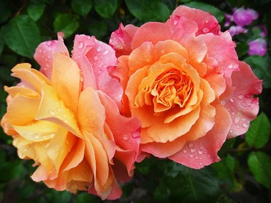

Etant inscrit au cp1 en 2001.
Dans une école à bingerville nommé plateau3.
j'ai obtenu mon entré en sixiéme (CEPE) en 2008
J'ai été orienté au collége moderne de bingerville.
Ou j'ai commencé la classe de 6eme1 en 2009.
En 2011,étant en classe de troisiéme j'avais arreté les études à cause de la crise poste électorale

Aprés la crise je me suis inscit en troisiéme dans une école privée à bingerville nommé gnacanaci
Ayant faire la classe de troisiéme à gnacanaci en 2012.
J'ai composé au lycée jeune fille de bingerville .
J'obtient vite mon BEPC à l'ecole gnacanaci en 2012.
J'ai été orienté au lycée classique d'abidjan pour la classe de seconde.
Je me suis inscrit au classique dans la filiére de seconde C en 2013.
J'ai fait une classe de prémiére D au lycée classique en 2014.
L'année 2015-2016 j'ai repris la classe de terminale D au lucée classique.
Par la suite,j'obtient le BAC D au cour de l'année 2016-2017.
J'ai été orienté aprés le BAC à l'université Nangui Abrogoua.

Aprés mon orientation à l'université je me suis inscrit dans la filiére mathématique à partir de l'année 2017-2018
En juillet 2020 je me suis inscrit à IGS pour la formation Réferent Digital.